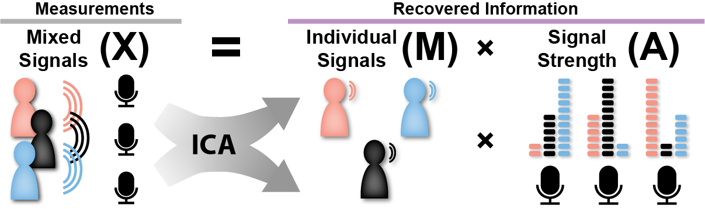

About iModulonDB
Welcome to iModulonDB! This is a web-based tool for accessing a database of transcriptomic dataset decompositions. If you are a biologist interested in what machine learning can tell us about the regulation of bacterial gene expression, this site will provide very valuable tools for you.
Basics
This is a transcriptomic dataset. Each column represents an experimental condition that cells were subjected to, and each row represents a gene. Each element is an expression value indicating how active the gene is under the given condition. This dataset has been normalized such that the entire left column, representing the baseline condition of simple growth on glucose, is zero (white), and positive and negative values in other elements indicate that the gene is more or less expressed than it is in the baseline.
All living things need to adapt their gene expression to the situation that they are in. Genes encode proteins that perform necessary functions, like consuming a specific food source, synthesizing a required building block, or responding to stress. For example, the gene glpT is used to import a specific type of food, glycerol. We can find its row in the dataset and see that when glycerol was in the cell’s media, this gene was upregulated - the cell figured out that this gene was helpful under this condition, and adapted to use it. One of our goals at the SBRG is to understand how and why genes are regulated the way that they are. We are specifically looking for patterns in this type of dataset that give us valuable insights.
glpT
glpA
Each of these plots represents a row from the dataset as a bar graph. We show two related genes: glpT, which imports glycerol, and glpA, which helps break down glycerol. The x axis labels are names given to the various projects in which the samples were collected (for example, ssw stands for "substrate-switching", in which we switched between various substrates). Hovering over the tallest bars reveals which conditions cause each of the genes to be upregulated. You will notice that in both graphs, activity is highest when glycerol is the carbon source. It would be convenient to treat both of these genes as part of a single glycerol-consumption unit in the transcriptome - the goal of our approach is to find all such units with unsupervised machine learning.
Have a dataset you'd like us to work with? Contact us.
Problems in Transcriptomics
- There are an extremely large number of genes - it would be nice if they were grouped together into a smaller number of variables.
- We want to know the activity of the underlying genetic regulators, and which regulators are most important.
- Some genes are completely unstudied - can we guess their function and regulation?
Applications of this Knowledge
Why study bacterial transcriptomics?
- Antibiotic development and resistance: We can learn how bacteria respond to stress, which helps the field develop better antibiotics.
- Bacterial cell factories: Bacteria are used to produce a ton of products for humans, such as pharmaceuticals and biofuels, and understanding how they regulate their genes improves the existing efficiency and opens doors to producing new products.
- Understand evolution: Knowledge of how gene expression changes in small-scale evolution experiments and across the phylogenetic tree can tell us how organisms change in general, which might help us in fighting future pandemics.
- Future applications to other organisms: Technology developed for bacteria can eventually be useful in more complex organisms, like humans. This would be applicable to understanding any human disease with a genetic component.
What is an iModulon?
Data scientists have developed machine learning algorithms that can address the problems described above. Unsupervised machine learning algorithms can identify patterns and structures underlying big datasets by simply using the information in the dataset itself. Independent Component Analysis (ICA) is one such method, and it has outperformed many other algorithms in detecting co-regulated gene sets.
By running the ICA algorithm on a transcriptomic dataset (see our github), we generate a set of iModulons. Each iModulon is a group of genes that represents an independently modulated signal, which the cell is probably controlling using the same or related regulators. Mathematically, an iModulon has a weight for each gene and an activity for each condition. The highly weighted genes are iModulon members, and the highly active conditions are those that the iModulon is likely performing a function in. We characterize an iModulon by interpreting its gene members and activity levels. For example, the glpR iModulon contains all the genes that are associated with digesting glycerol, and it is active when glycerol is present in the media. We named it 'GlpR' because that is the name of the transcription factor that co-regulates all of its genes.

X: Original transcriptomic dataset. We make the assumption that the X matrix results from a mix of underlying signals (iModulons) controlled by regulators like transcription factors (TFs), and we use the ICA algorithm to identify those signals.
M: Links genes to iModulons. A gene that is highly weighted is said to be a “member” of the iModulon, and all iModulon members are expressed as a group. If the iModulon is a sports team, the M matrix defines who the players are.
A: Links iModulons to conditions. If an iModulon is highly active in a given condition, it is probably carrying out a function that is important in that condition. If the iModulon is a sports team, the A matrix describes its playbook.
iModulon Definitions and Properties
- iModulon: An independently modulated group of genes, often representing the effect of a transcriptional regulator. These are identified by observing patterns in transciptomic datasets.
- Regulon: A group of genes regulated by the same transcriptional regulator, as defined by literature. iModulons are often nearly identical to regulons, but may also be subsets or combinations of regulons.
- Gene weights: Each iModulon contains a weighting for each of its constituent genes. Genes with large weightings are more sensitive to changes in the underlying regulator’s activity than genes with small weightings. Genes can also have negative weightings, indicating a tradeoff between those genes and their positive counterparts.
- iModulon Activity: Analogous to gene expression, iModulon activity represents how much of the iModulon genes are present under a given condition. Input data is normalized so that the base condition always has activity of zero. The units are the same as the initial dataset, but they result from matrix multiplication which makes them dependent on the gene weight distribution.
- Independence: The underlying assumption behind ICA is that each transcription factor has an independent effect across the genome. This means that merely knowing the targets of one regulator does not provide any information on the targets of another regulator. Unlike other matrix decomposition algorithms like PCA, ICA uses statistical independence to define the iModulons it finds. This means that iModulons are not always orthogonal to one another.
- Linear Additivity: iModulons obey matrix multiplication rules. A gene can be in more than one iModulon; when this happens, the action of both iModulons add together to determine gene expression, in a manner proportional to the gene weights.
- Reconstruction: The iModulon matrices “decompose” the transcriptomic matrix. This means we can reconstruct the initial data using the iModulons, and compare them. In our original paper on this topic, the iModulons accounted for 76% of the variance in the original data. This means that the genes in iModulons are the most important ones for explaining what is happening in the original data, and everything else only counts for 24%.
Where does ICA come from?
ICA was originally developed in the 1980s to solve the blind source separation problem, also known as the cocktail party problem. Imagine you place microphones around a crowded, noisy room. Each microphone would pick up different combinations of each speaker. If we apply ICA to the resultant set of recordings, we can identify the original source signals (M) without any other information. In addition, ICA infers the volume of each source in each microphone-measured signal (A).
Similarly, a transcriptomic dataset acts like microphones into the cell, measuring the combined effects of different transcriptional regulators with various condition-specific activities. The regulators/iModulons are behaving independently in the cell, the same way that the people in the room behave independently.
Examples of iModulons
- glpR: As discussed on this page, glpR regulates the import and catabolism of glycerol, and it is active when glycerol is present.
- Leu/Ile: This iModulon is regulated by both leucine-tRNA attenuation and isoleucine-tRNA attenuation. It contains genes for producing the branched chain amino acids, and it is active when they are needed and inactive when they are present.
- SoxS: This iModulon regulates the response to a type of stress (oxidative stress).
- FlhDC: This iModulon encodes flagella assembly. If it is active, the cell is likely to be motile. If not, the cell is probably stationary.
- Fur-KO: Not all iModulons represent transcription factors. They can also capture genomic alterations in the dataset. Here, the fur gene was knocked out, and an iModulon captured the change to the transcriptome that resulted.
Uses of iModulons
- Systems-level view of the transcriptome: We now have approximately 100 variables which we know have some importance in the dataset, as opposed to the 1000s of genes we started with. What those variables are tells us a lot about how cells regulate themselves.
- Grouping genes together: Let’s say you’re a biologist interested in a specific gene. Check out the database (by using the search functionality for your organism of choice) to learn which other genes share an iModulon with it - now you know which other players are on its team, so to speak. This assists with characterizing unknown genes and better understanding biological responses. We have used our gene groupings to identify new gene-regulator relationships, and validated them using chip-exo.
- Discovering new regulators: Uncharacterized groups of genes that show up in iModulons together are likely co-regulated by some unknown mechanism. We have discovered new regulators this way. We have also used iModulons to identify novel relationships among two-component regulators, impying cross-regulation.
- Understanding cellular function and activity: When faced with the activity profile of an iModulon, we can try to connect its function and activity. This was easy in the case of glycerol: any time glycerol is present, the glpR iModulon becomes activated. Other cases are not so self-explanatory, and may point to interesting hypotheses. Many of them were explored in Bacillus subtilis.
What is a regulon, and how is it different?
- Regulons are the closest existing concept to an iModulon. They are groups of genes known to be co-regulated by a given transcription factor based mostly on the location of known binding sites.
- The identification of binding sites is a costly and difficult experimental procedure, and it often doesn’t capture the full picture since promoter binding is complicated and condition-dependent.
- By matching iModulons to regulons (we say the iModulon is enriched for the given regulon), we can easily learn what likely regulates the iModulon. We can also look at the differences between regulons and iModulons to identify gaps in the field’s current knowledge. MetJ is one example, in which we showed that the extra iModulon genes were in fact regulated by MetJ and the genes the iModulon missed did not have MetJ binding sites.
- The strength of an enrichment is quantified by precision and recall. If both precision and recall are high, then the iModulon has captured a regulon that is well understood by the existing literature.
- Precision is the fraction of iModulon genes that are known to be in the regulon. If precision is low, the iModulon may contain extra genes that are unexpectedly co-regulated with the regulon.
- Recall is the fraction of regulon genes that are in the iModulon. If recall is low, the iModulon contains a subset of the regulon, which may be because there are additional nuances to the regulation or that the iModulon genes respond the strongest to the given regulator.
Using this Site
The purpose of this site is to share the powerful top-down approach of ICA with other systems biologists and microbiologists. We hope that searching for the genes and functions relevant to your research will point you toward iModulons that expand your understanding of which genes are most important to your application. We are currently working on decomposing additional datasets to compute transcriptional regulatory networks across many organisms, which will advance our knowledge significantly in the age of big data.
To use this site, select your favorite organism from the list on our home page. This will take you to a dataset page, which contains a list of the iModulons we have computed and characterized, as well as the publication in which we describe the set. Click on a row in the iModulon table to see its dashboard, where you can learn about its gene members, activity, and regulator enrichments.
Alternatively, select 'Gene Search' from the dataset page and type in your genes of interest. This will bring you to a similar dashboard, listing the most relevant iModulons for your gene. Note that some genes are removed prior to running ICA if they are never expressed or shown to be extremely noisy within conditions; if that is the case, your gene will not show up in our search.
iModulon Dashboard Overview
For a description of each of the figures shown on the iModulon dashboards hover over the various components of the example “MalT” iModulon below:
Genes
Activity
Regulation
Citations
Please cite the iModulonDB paper as well as the paper(s) associated with the organism(s) of interest.
iModulonDB: Rychel, et al.
E. coli: Sastry, et al.
S. aureus: Poudel, et al.
B. subtilis: Rychel, et al.
Contact Us
For questions, comments, feedback, or to collaborate with us, please send an email to Kevin Rychel (imodulondb@ucsd.edu).
For more information on the Systems Biology Research Group (SBRG) at the University of California, San Diego, please see our website here.